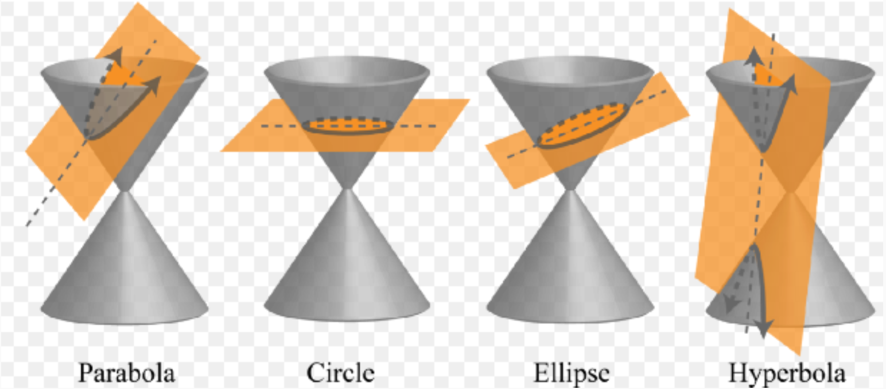
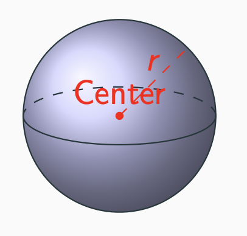
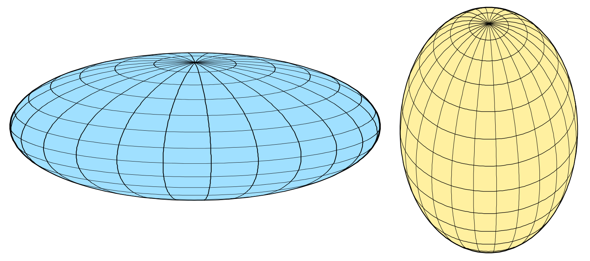
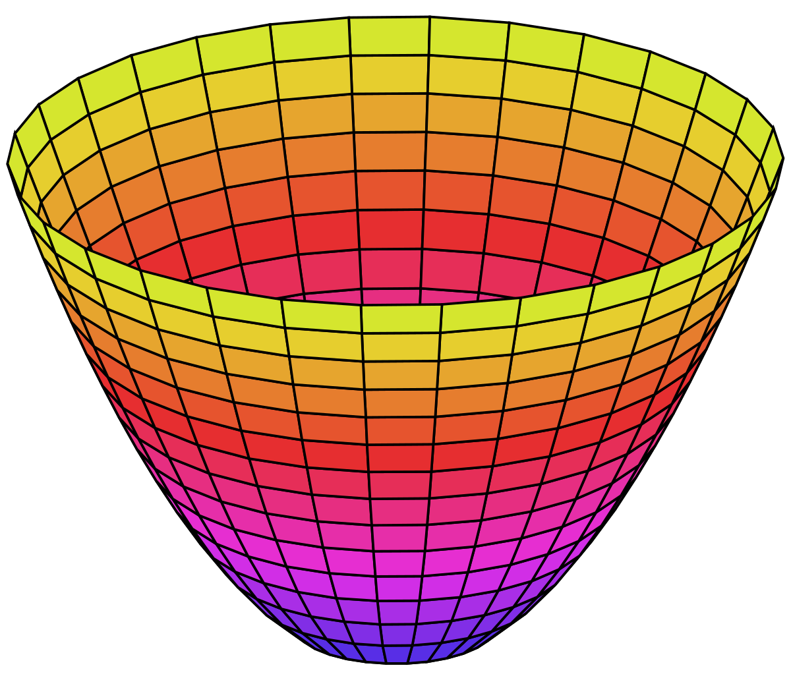
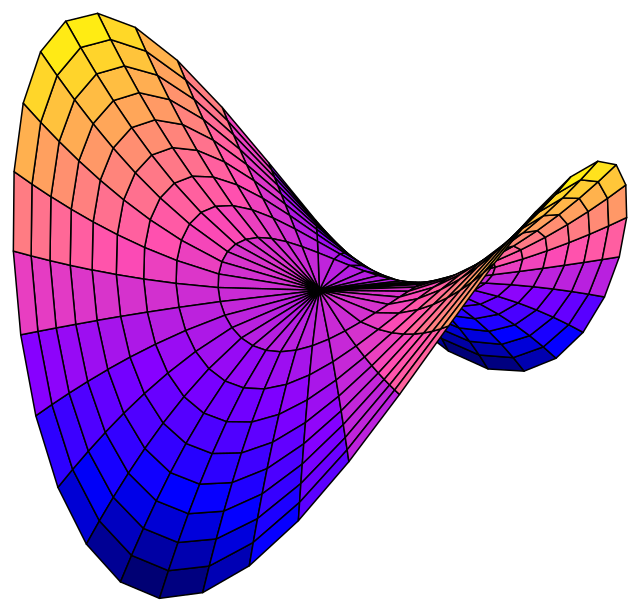
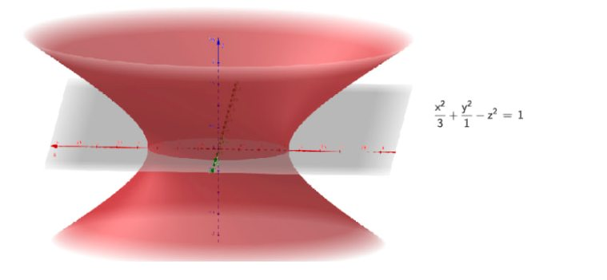
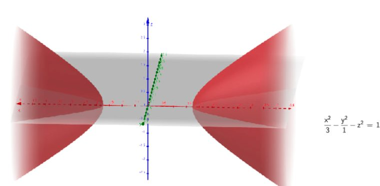
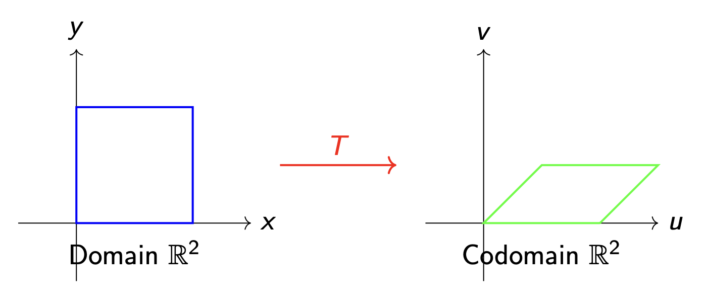

W13. Quadric Surfaces, Linear Transformations, Matrix Representations
1. Summary
1.1 Second Order Surfaces in 3D (Quadrics)
Quadric surfaces are three-dimensional analogues of conic sections. Just as conic sections (circles, ellipses, parabolas, and hyperbolas) are defined by second-degree polynomial equations in 2D, quadric surfaces are defined by second-degree polynomial equations in three variables \(x\), \(y\), and \(z\).
1.1.1 From 2D Conics to 3D Surfaces
The transition from 2D curves to 3D surfaces follows a natural principle: we extend curves by rotating them around one of their axes of symmetry.

The correspondence between 2D conics and their 3D extensions:
- Circle → Sphere: A circle rotated around any diameter creates a sphere
- Ellipse → Ellipsoid: An ellipse rotated around one of its axes creates an ellipsoid
- Parabola → Paraboloid: A parabola rotated around its axis of symmetry creates a paraboloid
- Hyperbola → Hyperboloid: A hyperbola rotated around its axis creates a hyperboloid
1.1.2 Types of Quadric Surfaces
Sphere

A sphere is the set of all points in space equidistant from a fixed point called the center.
- Standard equation: \(x^2 + y^2 + z^2 = r^2\) (centered at origin with radius \(r\))
- General equation: \((x - a)^2 + (y - b)^2 + (z - c)^2 = r^2\) (centered at \((a, b, c)\))
- Expanded form: \(x^2 + y^2 + z^2 + Dx + Ey + Fz + G = 0\)
Ellipsoid

An ellipsoid is a “stretched” sphere where the scaling factors along each axis may differ.
- Standard equation: \(\frac{x^2}{a^2} + \frac{y^2}{b^2} + \frac{z^2}{c^2} = 1\)
- When \(a = b = c\), the ellipsoid becomes a sphere
- The parameters \(a\), \(b\), and \(c\) are the semi-axes along the \(x\), \(y\), and \(z\) directions respectively
Elliptic Paraboloid

An elliptic paraboloid is a bowl-shaped surface (like satellite dishes and headlight reflectors).
- Standard equation: \(z = \frac{x^2}{a^2} + \frac{y^2}{b^2}\)
- Cross-sections parallel to the \(xy\)-plane are ellipses
- Cross-sections parallel to the \(xz\)-plane or \(yz\)-plane are parabolas
- The vertex is at the origin, and the surface opens upward (or downward if \(z\) is negative)
Hyperbolic Paraboloid

A hyperbolic paraboloid is a saddle-shaped surface.
- Standard equation: \(z = \frac{x^2}{a^2} - \frac{y^2}{b^2}\)
- Cross-sections parallel to the \(xy\)-plane are hyperbolas
- Cross-sections parallel to the \(xz\)-plane are upward-opening parabolas
- Cross-sections parallel to the \(yz\)-plane are downward-opening parabolas
Hyperboloid of One Sheet

A hyperboloid of one sheet resembles an hourglass or cooling tower shape — a single connected surface.
- Standard equation: \(\frac{x^2}{a^2} + \frac{y^2}{b^2} - \frac{z^2}{c^2} = 1\)
- Cross-sections parallel to the \(xy\)-plane are ellipses
- The surface is connected and extends infinitely
Hyperboloid of Two Sheets

A hyperboloid of two sheets consists of two separate bowl-shaped surfaces facing away from each other.
- Standard equation: \(\frac{x^2}{a^2} + \frac{y^2}{b^2} - \frac{z^2}{c^2} = -1\)
- Or equivalently: \(\frac{z^2}{c^2} - \frac{x^2}{a^2} - \frac{y^2}{b^2} = 1\)
- The two sheets are separated by a gap
Cone
A cone is a surface formed by all lines passing through a fixed point (vertex) and intersecting a curve (the directrix).
- Circular cone equation: \(\frac{x^2}{a^2} + \frac{y^2}{a^2} = \frac{z^2}{c^2}\)
- Cross-sections parallel to the \(xy\)-plane are circles
- The vertex is at the origin
- A cone has two nappes: upper (\(z \geq 0\)) and lower (\(z \leq 0\))
1.1.3 Identifying Quadric Surfaces
To identify a quadric surface from a general equation:
- Complete the square for each variable if necessary
- Rearrange to standard form
- Compare with standard equations to identify the type
Key identification rules:
- All positive terms, equals constant: Ellipsoid (or sphere if coefficients are equal)
- Two positive, one negative, equals positive constant: Hyperboloid of one sheet
- Two positive, one negative, equals negative constant: Hyperboloid of two sheets
- Two squared terms equal to a linear term: Paraboloid (elliptic or hyperbolic)
1.1.4 Real-World Applications
- Sphere: Planets, balls, bubbles
- Ellipsoid: Earth’s shape (geoid), some sports balls
- Paraboloid: Satellite dishes, headlights, telescope mirrors
- Hyperboloid: Cooling towers, nuclear reactor structures, architecture
1.2 Linear Transformations
1.2.1 Definition of Linear Transformation
A linear transformation is a special type of function between vector spaces that preserves the fundamental operations of vector addition and scalar multiplication.

Formal Definition: A function \(T : \mathbb{R}^m \to \mathbb{R}^n\) is a linear transformation if for all vectors \(\mathbf{u}, \mathbf{v} \in \mathbb{R}^m\) and all scalars \(c \in \mathbb{R}\):
- Additivity: \(T(\mathbf{u} + \mathbf{v}) = T(\mathbf{u}) + T(\mathbf{v})\)
- Homogeneity: \(T(c\mathbf{u}) = cT(\mathbf{u})\)
Equivalent Condition: \(T\) is linear if and only if for all \(\mathbf{u}, \mathbf{v} \in \mathbb{R}^m\) and \(a, b \in \mathbb{R}\): \[T(a\mathbf{u} + b\mathbf{v}) = aT(\mathbf{u}) + bT(\mathbf{v})\]
This means linear transformations preserve linear combinations.
1.2.2 Properties of Linear Transformations
If \(T : \mathbb{R}^m \to \mathbb{R}^n\) is a linear transformation, then:
- \(T(\mathbf{0}) = \mathbf{0}\) — the zero vector always maps to the zero vector
- \(T(c_1\mathbf{v}_1 + c_2\mathbf{v}_2 + \cdots + c_k\mathbf{v}_k) = c_1T(\mathbf{v}_1) + c_2T(\mathbf{v}_2) + \cdots + c_kT(\mathbf{v}_k)\)
Important: If \(T(\mathbf{0}) \neq \mathbf{0}\), then \(T\) is NOT a linear transformation!
1.2.3 Verifying Linearity
To check if a transformation is linear, you can:
- Method 1: Verify both additivity and homogeneity properties directly
- Method 2: Check if \(T(a\mathbf{u} + b\mathbf{v}) = aT(\mathbf{u}) + bT(\mathbf{v})\) for arbitrary vectors and scalars
- Quick Test: If \(T(\mathbf{0}) \neq \mathbf{0}\), then \(T\) is NOT linear
Common non-linear patterns:
- Adding a constant vector: \(T(\vec{x}) = \vec{x} + \vec{c}\) (translation)
- Products of variables: \(T(x, y) = xy\)
- Non-linear functions: \(T(x) = x^2\), \(T(x) = \sin(x)\)
1.3 Matrix Representation
1.3.1 The Standard Matrix
Every linear transformation \(T : \mathbb{R}^m \to \mathbb{R}^n\) can be represented by a unique \(n \times m\) matrix \(A\) such that: \[T(\mathbf{x}) = A\mathbf{x}\]
Constructing the Standard Matrix: The standard matrix \(A\) of \(T\) is constructed by applying \(T\) to each standard basis vector and using the results as columns: \[A = \begin{bmatrix} T(\mathbf{e}_1) & T(\mathbf{e}_2) & \cdots & T(\mathbf{e}_m) \end{bmatrix}\]
where \(\mathbf{e}_1, \mathbf{e}_2, \ldots, \mathbf{e}_m\) are the standard basis vectors of \(\mathbb{R}^m\).
For example, in \(\mathbb{R}^2\):
- \(\mathbf{e}_1 = \begin{pmatrix} 1 \\ 0 \end{pmatrix}\)
- \(\mathbf{e}_2 = \begin{pmatrix} 0 \\ 1 \end{pmatrix}\)
In \(\mathbb{R}^3\):
- \(\mathbf{e}_1 = \begin{pmatrix} 1 \\ 0 \\ 0 \end{pmatrix}\), \(\mathbf{e}_2 = \begin{pmatrix} 0 \\ 1 \\ 0 \end{pmatrix}\), \(\mathbf{e}_3 = \begin{pmatrix} 0 \\ 0 \\ 1 \end{pmatrix}\)
1.3.2 Common Linear Transformations in \(\mathbb{R}^2\)
Rotation by angle \(\theta\) counterclockwise: \[R = \begin{bmatrix} \cos \theta & -\sin \theta \\ \sin \theta & \cos \theta \end{bmatrix}\]
Scaling: \[S = \begin{bmatrix} s_x & 0 \\ 0 & s_y \end{bmatrix}\]
where \(s_x\) and \(s_y\) are scaling factors in the \(x\) and \(y\) directions.
Reflection about the x-axis: \[\begin{bmatrix} 1 & 0 \\ 0 & -1 \end{bmatrix}\]
Reflection about the y-axis: \[\begin{bmatrix} -1 & 0 \\ 0 & 1 \end{bmatrix}\]
Reflection about the line \(y = x\): \[\begin{bmatrix} 0 & 1 \\ 1 & 0 \end{bmatrix}\]
Horizontal Shear: \[\begin{bmatrix} 1 & k \\ 0 & 1 \end{bmatrix}\]
Projection onto the x-axis: \[\begin{bmatrix} 1 & 0 \\ 0 & 0 \end{bmatrix}\]
1.3.3 Projection Transformations
A projection transformation maps vectors onto a subspace (like a line or plane).
Projection onto the xy-plane in \(\mathbb{R}^3\): \[A = \begin{bmatrix} 1 & 0 & 0 \\ 0 & 1 & 0 \\ 0 & 0 & 0 \end{bmatrix}, \quad T\begin{pmatrix} x \\ y \\ z \end{pmatrix} = \begin{bmatrix} x \\ y \\ 0 \end{bmatrix}\]
Properties of projection transformations:
- Idempotent: Applying the projection twice gives the same result as applying it once: \(T(T(\vec{v})) = T(\vec{v})\)
- Not invertible: Many vectors map to the same projection, so no inverse exists
- Rank: Equals the dimension of the subspace projected onto
- Nullity: Equals the dimension “lost” in the projection
1.4 Composition of Transformations
1.4.1 Composing Linear Transformations
If \(T : \mathbb{R}^m \to \mathbb{R}^n\) and \(S : \mathbb{R}^n \to \mathbb{R}^p\) are linear transformations with matrices \(A\) and \(B\) respectively, then the composition \(S \circ T\) is also a linear transformation: \[(S \circ T)(\mathbf{x}) = S(T(\mathbf{x})) = B(A\mathbf{x}) = (BA)\mathbf{x}\]
Key insight: The matrix of the composition is the product of the individual matrices, in reverse order.
Important: Order matters! In general, \(BA \neq AB\).
- \(S \circ T\) means: first apply \(T\), then apply \(S\) — matrix is \(BA\)
- \(T \circ S\) means: first apply \(S\), then apply \(T\) — matrix is \(AB\)
1.5 Kernel and Image
1.5.1 The Kernel (Null Space)
The kernel (or null space) of a linear transformation \(T\) is the set of all vectors that get mapped to the zero vector: \[\ker(T) = \{ \mathbf{v} \in \mathbb{R}^m \mid T(\mathbf{v}) = \mathbf{0} \}\]
Properties:
- The kernel is a subspace of the domain \(\mathbb{R}^m\)
- Vectors in the kernel contain no information in the output
- The dimension of the kernel is called the nullity: \(\text{nullity}(T) = \dim(\ker(T))\)
1.5.2 The Image (Range)
The image (or range) of a linear transformation \(T\) is the set of all possible outputs: \[\text{im}(T) = \{ T(\mathbf{v}) \mid \mathbf{v} \in \mathbb{R}^m \}\]
Properties:
- The image is a subspace of the codomain \(\mathbb{R}^n\)
- It represents all vectors we can “reach” using \(T\)
- The dimension of the image is called the rank: \(\text{rank}(T) = \dim(\text{im}(T))\)
- The image equals the column space of the transformation matrix
1.5.3 The Rank-Nullity Theorem
For any linear transformation \(T : \mathbb{R}^m \to \mathbb{R}^n\): \[\dim(\ker(T)) + \dim(\text{im}(T)) = \dim(\text{Domain})\]
Or equivalently: \[\text{nullity}(T) + \text{rank}(T) = m\]
Interpretation: The dimension of the domain is partitioned into:
- The dimension “collapsed” to zero (nullity) — information lost
- The dimension “preserved” in the output (rank) — information kept
Applications:
- If \(\text{nullity}(T) > 0\), the equation \(T(\mathbf{x}) = \mathbf{b}\) has either zero or infinitely many solutions
- \(T\) is one-to-one (injective) if and only if \(\text{nullity}(T) = 0\)
- \(T\) is onto (surjective) \(\mathbb{R}^n\) if and only if \(\text{rank}(T) = n\)
1.6 Inverse Transformations
1.6.1 When is a Transformation Invertible?
A linear transformation \(T : \mathbb{R}^n \to \mathbb{R}^n\) is invertible if there exists a transformation \(T^{-1}\) such that: \[T^{-1}(T(\mathbf{x})) = \mathbf{x} \text{ and } T(T^{-1}(\mathbf{y})) = \mathbf{y}\]
Conditions for invertibility:
- The transformation must be from \(\mathbb{R}^n\) to \(\mathbb{R}^n\) (same dimension)
- The matrix must be square
- The determinant must be non-zero: \(\det(A) \neq 0\)
- The transformation must be bijective (both injective and surjective)
For a \(2 \times 2\) matrix \(A = \begin{bmatrix} a & b \\ c & d \end{bmatrix}\): \[A^{-1} = \frac{1}{\det(A)} \begin{bmatrix} d & -b \\ -c & a \end{bmatrix} = \frac{1}{ad - bc} \begin{bmatrix} d & -b \\ -c & a \end{bmatrix}\]
1.7 Applications
1.7.1 Computer Graphics
Linear transformations are fundamental in computer graphics:
- Rotation, scaling, and translation of objects
- 3D to 2D projection for rendering
- Image transformations and manipulations
To apply multiple transformations to an object, multiply the matrices in reverse order of application, then apply the resulting matrix to all vertices.
1.7.2 Data Science and Machine Learning
- Principal Component Analysis (PCA): Projects data onto principal directions
- Linear regression transformations
- Feature scaling and normalization
1.7.3 Physics and Engineering
- Coordinate system transformations
- Stress-strain relationships
- Electrical circuit analysis
2. Definitions
- Quadric Surface: A three-dimensional surface defined by a second-degree polynomial equation in \(x\), \(y\), and \(z\).
- Sphere: The set of all points in space equidistant from a fixed center point.
- Ellipsoid: A quadric surface where all cross-sections are ellipses (or circles); a “stretched” sphere.
- Elliptic Paraboloid: A bowl-shaped quadric surface with elliptical cross-sections parallel to the base plane.
- Hyperbolic Paraboloid: A saddle-shaped quadric surface with hyperbolic cross-sections.
- Hyperboloid of One Sheet: A connected quadric surface resembling an hourglass shape.
- Hyperboloid of Two Sheets: A quadric surface consisting of two separate components.
- Cone: A surface formed by all lines passing through a fixed vertex and intersecting a base curve.
- Linear Transformation: A function \(T : \mathbb{R}^m \to \mathbb{R}^n\) that preserves vector addition and scalar multiplication.
- Standard Matrix: The unique matrix \(A\) representing a linear transformation such that \(T(\mathbf{x}) = A\mathbf{x}\).
- Standard Basis Vectors: The unit vectors \(\mathbf{e}_1, \mathbf{e}_2, \ldots, \mathbf{e}_n\) with 1 in one position and 0 elsewhere.
- Kernel (Null Space): The set of all vectors mapped to zero by a linear transformation: \(\ker(T) = \{\mathbf{v} : T(\mathbf{v}) = \mathbf{0}\}\).
- Image (Range): The set of all possible outputs of a linear transformation: \(\text{im}(T) = \{T(\mathbf{v}) : \mathbf{v} \in \text{domain}\}\).
- Nullity: The dimension of the kernel of a linear transformation.
- Rank: The dimension of the image of a linear transformation.
- Composition: The application of one transformation followed by another; \((S \circ T)(\mathbf{x}) = S(T(\mathbf{x}))\).
- Invertible Transformation: A transformation with an inverse; requires \(\det(A) \neq 0\) for matrix representation.
- Projection: A transformation that maps vectors onto a subspace, characterized by being idempotent (\(T^2 = T\)).
3. Formulas
- Sphere (centered at origin): \(x^2 + y^2 + z^2 = r^2\)
- Sphere (general center): \((x - a)^2 + (y - b)^2 + (z - c)^2 = r^2\)
- Ellipsoid: \(\frac{x^2}{a^2} + \frac{y^2}{b^2} + \frac{z^2}{c^2} = 1\)
- Elliptic Paraboloid: \(z = \frac{x^2}{a^2} + \frac{y^2}{b^2}\)
- Hyperbolic Paraboloid: \(z = \frac{x^2}{a^2} - \frac{y^2}{b^2}\)
- Hyperboloid of One Sheet: \(\frac{x^2}{a^2} + \frac{y^2}{b^2} - \frac{z^2}{c^2} = 1\)
- Hyperboloid of Two Sheets: \(\frac{x^2}{a^2} + \frac{y^2}{b^2} - \frac{z^2}{c^2} = -1\)
- Circular Cone: \(\frac{x^2}{a^2} + \frac{y^2}{a^2} = \frac{z^2}{c^2}\)
- Standard Matrix Construction: \(A = \begin{bmatrix} T(\mathbf{e}_1) & T(\mathbf{e}_2) & \cdots & T(\mathbf{e}_m) \end{bmatrix}\)
- Rotation Matrix (2D, counterclockwise by \(\theta\)): \(R = \begin{bmatrix} \cos \theta & -\sin \theta \\ \sin \theta & \cos \theta \end{bmatrix}\)
- Scaling Matrix (2D): \(S = \begin{bmatrix} s_x & 0 \\ 0 & s_y \end{bmatrix}\)
- Reflection about x-axis: \(\begin{bmatrix} 1 & 0 \\ 0 & -1 \end{bmatrix}\)
- Reflection about y-axis: \(\begin{bmatrix} -1 & 0 \\ 0 & 1 \end{bmatrix}\)
- Reflection about \(y = x\): \(\begin{bmatrix} 0 & 1 \\ 1 & 0 \end{bmatrix}\)
- Shear Matrix (horizontal): \(\begin{bmatrix} 1 & k \\ 0 & 1 \end{bmatrix}\)
- Projection onto xy-plane: \(\begin{bmatrix} 1 & 0 & 0 \\ 0 & 1 & 0 \\ 0 & 0 & 0 \end{bmatrix}\)
- Projection onto x-axis (2D): \(\begin{bmatrix} 1 & 0 \\ 0 & 0 \end{bmatrix}\)
- Composition of Transformations: \((S \circ T)(\mathbf{x}) = (BA)\mathbf{x}\) where \(T\) has matrix \(A\) and \(S\) has matrix \(B\)
- Rank-Nullity Theorem: \(\text{nullity}(T) + \text{rank}(T) = \dim(\text{Domain})\)
- 2×2 Matrix Inverse: \(A^{-1} = \frac{1}{ad-bc}\begin{bmatrix} d & -b \\ -c & a \end{bmatrix}\) for \(A = \begin{bmatrix} a & b \\ c & d \end{bmatrix}\)
- Perpendicular Distance from Point to Plane: \(d = \frac{|ax_0 + by_0 + cz_0 + d|}{\sqrt{a^2 + b^2 + c^2}}\) for plane \(ax + by + cz + d = 0\)
4. Examples
4.1. Identify Quadric Surface Type (Lab 13, Problem 1a)
Write the standard equation and determine the type of quadric surface: \(x^2 - y^2 + 4y + z = 4\)
Click to see the solution
Key Concept: Complete the square to transform the equation into standard form.
Rearrange and complete the square for \(y\): \[x^2 - y^2 + 4y + z = 4\] \[x^2 - (y^2 - 4y) + z = 4\] \[x^2 - (y^2 - 4y + 4) + 4 + z = 4\] \[x^2 - (y - 2)^2 + z = 0\]
Solve for \(z\): \[z = (y - 2)^2 - x^2\]
Identify the surface: This is a difference of squares equal to a linear term in \(z\).
Answer: Standard form: \(z = (y - 2)^2 - x^2\). This is a Hyperbolic Paraboloid.
4.2. Identify Quadric Surface Type (Lab 13, Problem 1b)
Write the standard equation and determine the type of quadric surface: \(z^2 = 3x^2 + 4y^2 - 12\)
Click to see the solution
Key Concept: Rearrange to standard form and identify the sign pattern.
Rearrange the equation: \[z^2 - 3x^2 - 4y^2 = -12\]
Divide by \(-12\) to get \(1\) on the right: \[\frac{z^2}{-12} - \frac{3x^2}{-12} - \frac{4y^2}{-12} = 1\] \[\frac{x^2}{4} + \frac{y^2}{3} - \frac{z^2}{12} = 1\]
Identify: Two positive squared terms and one negative squared term equal to \(+1\).
Answer: Standard form: \(\frac{x^2}{4} + \frac{y^2}{3} - \frac{z^2}{12} = 1\). This is a Hyperboloid of One Sheet.
4.3. Identify Quadric Surface Type (Lab 13, Problem 1c)
Write the standard equation and determine the type of quadric surface: \(z = x^2 + y^2 + 1\)
Click to see the solution
Key Concept: Recognize the sum of squares pattern.
Rearrange: \[z - 1 = x^2 + y^2\]
Identify: This is a sum of two squared terms equal to a linear term. The vertex is shifted to \((0, 0, 1)\).
Answer: Standard form: \(z - 1 = x^2 + y^2\). This is an Elliptic Paraboloid (specifically, a circular paraboloid since the coefficients are equal).
4.4. Identify Quadric Surface Type (Lab 13, Problem 1d)
Write the standard equation and determine the type of quadric surface: \(x^2 + y^2 - 4z^2 + 4x - 6y - 8z = 13\)
Click to see the solution
Key Concept: Complete the square for all three variables.
Group terms and complete the square: \[(x^2 + 4x) + (y^2 - 6y) - 4(z^2 + 2z) = 13\]
Complete each square:
- \((x^2 + 4x + 4) - 4 = (x + 2)^2 - 4\)
- \((y^2 - 6y + 9) - 9 = (y - 3)^2 - 9\)
- \(-4(z^2 + 2z + 1) + 4 = -4(z + 1)^2 + 4\)
Substitute back: \[(x + 2)^2 - 4 + (y - 3)^2 - 9 - 4(z + 1)^2 + 4 = 13\] \[(x + 2)^2 + (y - 3)^2 - 4(z + 1)^2 = 22\]
Divide by 22: \[\frac{(x + 2)^2}{22} + \frac{(y - 3)^2}{22} - \frac{(z + 1)^2}{22/4} = 1\] \[\frac{(x + 2)^2}{22} + \frac{(y - 3)^2}{22} - \frac{(z + 1)^2}{11/2} = 1\]
Answer: Standard form: \(\frac{(x+2)^2}{22} + \frac{(y-3)^2}{22} - \frac{(z+1)^2}{11/2} = 1\). This is a Hyperboloid of One Sheet centered at \((-2, 3, -1)\).
4.5. Identify Quadric Surface Type (Lab 13, Problem 1e)
Write the standard equation and determine the type of quadric surface: \(4x^2 + 9y^2 + 36z^2 = 36\)
Click to see the solution
Key Concept: Divide to get 1 on the right side.
Divide both sides by 36: \[\frac{4x^2}{36} + \frac{9y^2}{36} + \frac{36z^2}{36} = 1\] \[\frac{x^2}{9} + \frac{y^2}{4} + \frac{z^2}{1} = 1\]
Identify: All positive squared terms equal to 1.
Answer: Standard form: \(\frac{x^2}{9} + \frac{y^2}{4} + z^2 = 1\). This is an Ellipsoid with semi-axes \(a = 3\), \(b = 2\), \(c = 1\).
4.6. Identify Quadric Surface Type (Lab 13, Problem 1f)
Write the standard equation and determine the type of quadric surface: \(4 - 4y^2 - z^2 = x\)
Click to see the solution
Key Concept: Recognize the paraboloid pattern.
Rearrange: \[-x = 4y^2 + z^2 - 4\] \[\frac{-x + 4}{4} = y^2 + \frac{z^2}{4}\]
Or equivalently: \[y^2 + \frac{z^2}{4} = 1 - \frac{x}{4}\]
Identify: Sum of squared terms equal to a linear expression — this is a paraboloid opening in the negative \(x\) direction.
Answer: Standard form: \(\frac{y^2}{1} + \frac{z^2}{4} = 1 - \frac{x}{4}\). This is an Elliptic Paraboloid.
4.7. Find Equation of a Sphere Through Two Points (Lab 13, Problem 2)
Find the equation of the sphere which passes through the points \((2, 7, -4)\) and \((4, 5, -1)\) and has its center on the line joining these two points as diameter.
Click to see the solution
Key Concept: If the line joining two points is a diameter, then the center is the midpoint, and the radius is half the distance between the points.
Find the center (midpoint of the diameter): \[\text{Center} = \left( \frac{2+4}{2}, \frac{7+5}{2}, \frac{-4+(-1)}{2} \right) = \left( 3, 6, -\frac{5}{2} \right)\]
Find the radius (half the distance between points): \[\text{Distance} = \sqrt{(4-2)^2 + (5-7)^2 + (-1-(-4))^2} = \sqrt{4 + 4 + 9} = \sqrt{17}\] \[r = \frac{\sqrt{17}}{2}\]
Write the standard equation: \[(x - 3)^2 + (y - 6)^2 + \left(z + \frac{5}{2}\right)^2 = \frac{17}{4}\]
Expand to general form (optional): \[x^2 + y^2 + z^2 - 6x - 12y + 5z + 9 + 36 + \frac{25}{4} - \frac{17}{4} = 0\] \[x^2 + y^2 + z^2 - 6x - 12y + 5z + 47 = 0\]
Answer: \((x - 3)^2 + (y - 6)^2 + (z + \frac{5}{2})^2 = \frac{17}{4}\) or \(x^2 + y^2 + z^2 - 6x - 12y + 5z + 47 = 0\)
4.8. Tangent Plane to a Sphere (Lab 13, Problem 3)
Show that the plane \(4x - 3y + 6z - 35 = 0\) is a tangent plane to the sphere \(x^2 + y^2 + z^2 - y - 2z - 14 = 0\) and find the point of contact.
Click to see the solution
Key Concept: A plane is tangent to a sphere if and only if the perpendicular distance from the center to the plane equals the radius.
Find the center and radius of the sphere:
Rewrite: \(x^2 + (y^2 - y) + (z^2 - 2z) = 14\)
Complete the squares: \[x^2 + \left(y - \frac{1}{2}\right)^2 - \frac{1}{4} + (z - 1)^2 - 1 = 14\] \[x^2 + \left(y - \frac{1}{2}\right)^2 + (z - 1)^2 = 14 + \frac{1}{4} + 1 = \frac{61}{4}\]
Center: \(\left(0, \frac{1}{2}, 1\right)\), Radius: \(r = \sqrt{\frac{61}{4}} = \frac{\sqrt{61}}{2}\)
Calculate perpendicular distance from center to plane:
Using the distance formula for point \((0, \frac{1}{2}, 1)\) to plane \(4x - 3y + 6z - 35 = 0\): \[d = \frac{|4(0) - 3(\frac{1}{2}) + 6(1) - 35|}{\sqrt{16 + 9 + 36}} = \frac{|0 - 1.5 + 6 - 35|}{\sqrt{61}} = \frac{|-30.5|}{\sqrt{61}} = \frac{30.5}{\sqrt{61}}\] \[d = \frac{61/2}{\sqrt{61}} = \frac{\sqrt{61}}{2} = r\]
Since \(d = r\), the plane is tangent to the sphere. ✓
Find the point of contact:
The point of contact lies on the line from the center perpendicular to the plane.
Direction of normal to plane: \((4, -3, 6)\)
Parametric equations from center \((0, \frac{1}{2}, 1)\): \[\frac{x - 0}{4} = \frac{y - \frac{1}{2}}{-3} = \frac{z - 1}{6} = t\]
Point on line: \((4t, -3t + \frac{1}{2}, 6t + 1)\)
Find \(t\) where this point lies on the plane: \[4(4t) - 3(-3t + \frac{1}{2}) + 6(6t + 1) - 35 = 0\] \[16t + 9t - \frac{3}{2} + 36t + 6 - 35 = 0\] \[61t - \frac{61}{2} = 0\] \[t = \frac{1}{2}\]
Calculate the point of contact: \[x = 4 \cdot \frac{1}{2} = 2\] \[y = -3 \cdot \frac{1}{2} + \frac{1}{2} = -1\] \[z = 6 \cdot \frac{1}{2} + 1 = 4\]
Answer: The plane is tangent to the sphere. The point of contact is \((2, -1, 4)\).
4.9. Find Equation of a Cone (Lab 13, Problem 4)
Find the equation of the cone with its vertex at \((1, 1, 1)\) and which passes through the curve \(x^2 + y^2 = 4\), \(z = 2\).
Click to see the solution
Key Concept: A cone is generated by lines (generators) passing through the vertex and intersecting a given curve (directrix).
Set up the generator line:
Let \(V = (1, 1, 1)\) be the vertex and \(P\) be any point on the cone surface.
The parametric equation of line \(VP\): \[\frac{x - 1}{l} = \frac{y - 1}{m} = \frac{z - 1}{n}\]
Find where the generator intersects plane \(z = 2\):
When \(z = 2\): \(\frac{z - 1}{n} = \frac{1}{n}\)
So: \(x = 1 + \frac{l}{n}\) and \(y = 1 + \frac{m}{n}\)
Apply the condition that this point lies on circle \(x^2 + y^2 = 4\): \[\left(1 + \frac{l}{n}\right)^2 + \left(1 + \frac{m}{n}\right)^2 = 4\] \[(n + l)^2 + (n + m)^2 = 4n^2\]
Eliminate parameters using the line equation:
From the parametric equations: \(\frac{l}{n} = \frac{x-1}{z-1}\) and \(\frac{m}{n} = \frac{y-1}{z-1}\)
Substituting: \[\left(1 + \frac{x-1}{z-1}\right)^2 + \left(1 + \frac{y-1}{z-1}\right)^2 = 4\] \[\left(\frac{z-1+x-1}{z-1}\right)^2 + \left(\frac{z-1+y-1}{z-1}\right)^2 = 4\] \[(x + z - 2)^2 + (y + z - 2)^2 = 4(z - 1)^2\]
Answer: \((x + z - 2)^2 + (y + z - 2)^2 = 4(z - 1)^2\)
4.10. Find Equation of Right Circular Cone (Lab 13, Problem 5)
Find the equation of the right circular cone whose vertex is at the origin, whose axis is the line \(\frac{x}{1} = \frac{y}{2} = \frac{z}{3}\), and which has a vertical angle of \(60°\).
Click to see the solution
Key Concept: For a right circular cone, every point on the surface makes the same angle (half the vertical angle) with the axis.
Find direction cosines of the axis:
Direction ratios: \((1, 2, 3)\)
Magnitude: \(\sqrt{1^2 + 2^2 + 3^2} = \sqrt{14}\)
Direction cosines: \(\left(\frac{1}{\sqrt{14}}, \frac{2}{\sqrt{14}}, \frac{3}{\sqrt{14}}\right)\)
Set up the cone condition:
Let \(P(x, y, z)\) be any point on the cone surface.
Let \(L\) be the foot of perpendicular from \(P\) to the axis.
The half-angle is \(\frac{60°}{2} = 30°\).
From trigonometry: \(\frac{OL}{OP} = \cos 30° = \frac{\sqrt{3}}{2}\)
Calculate \(OP\) and \(OL\):
\(OP = \sqrt{x^2 + y^2 + z^2}\)
\(OL\) = Projection of \(\vec{OP}\) onto axis direction: \[OL = x \cdot \frac{1}{\sqrt{14}} + y \cdot \frac{2}{\sqrt{14}} + z \cdot \frac{3}{\sqrt{14}} = \frac{x + 2y + 3z}{\sqrt{14}}\]
Apply the angle condition: \[\frac{OL}{OP} = \frac{\sqrt{3}}{2}\] \[\frac{(x + 2y + 3z)/\sqrt{14}}{\sqrt{x^2 + y^2 + z^2}} = \frac{\sqrt{3}}{2}\] \[\frac{2(x + 2y + 3z)}{\sqrt{14}} = \sqrt{3}\sqrt{x^2 + y^2 + z^2}\]
Square both sides: \[\frac{4(x + 2y + 3z)^2}{14} = 3(x^2 + y^2 + z^2)\] \[4(x + 2y + 3z)^2 = 42(x^2 + y^2 + z^2)\]
Expand and simplify: \[4(x^2 + 4y^2 + 9z^2 + 4xy + 12yz + 6zx) = 42x^2 + 42y^2 + 42z^2\] \[4x^2 + 16y^2 + 36z^2 + 16xy + 48yz + 24zx = 42x^2 + 42y^2 + 42z^2\] \[0 = 38x^2 + 26y^2 + 6z^2 - 16xy - 48yz - 24zx\]
Answer: \(19x^2 + 13y^2 + 3z^2 - 8xy - 24yz - 12zx = 0\)
4.11. Apply Linear Transformation Using Given Values (Lab 13, Problem 1 - Linear Transformations)
Let \(T : \mathbb{R}^3 \to \mathbb{R}^4\) be a linear transformation such that \(T\begin{pmatrix} 1 \\ 3 \\ 1 \end{pmatrix} = \begin{pmatrix} 4 \\ 4 \\ 0 \\ -2 \end{pmatrix}\) and \(T\begin{pmatrix} 4 \\ 0 \\ 5 \end{pmatrix} = \begin{pmatrix} 4 \\ 5 \\ -1 \\ 5 \end{pmatrix}\).
Find \(T\begin{pmatrix} -7 \\ 3 \\ -9 \end{pmatrix}\).
Click to see the solution
Key Concept: Linear transformations preserve linear combinations. If we can express the input as a linear combination of vectors whose images we know, we can find the output.
Express \(\begin{pmatrix} -7 \\ 3 \\ -9 \end{pmatrix}\) as a linear combination:
We need to find \(a, b\) such that: \[\begin{pmatrix} -7 \\ 3 \\ -9 \end{pmatrix} = a\begin{pmatrix} 1 \\ 3 \\ 1 \end{pmatrix} + b\begin{pmatrix} 4 \\ 0 \\ 5 \end{pmatrix}\]
Solve the system:
- \(a + 4b = -7\)
- \(3a + 0b = 3 \Rightarrow a = 1\)
- \(a + 5b = -9\)
From \(a = 1\): \(1 + 4b = -7 \Rightarrow b = -2\)
Verify: \(1 + 5(-2) = 1 - 10 = -9\) ✓
So: \(\begin{pmatrix} -7 \\ 3 \\ -9 \end{pmatrix} = 1 \cdot \begin{pmatrix} 1 \\ 3 \\ 1 \end{pmatrix} + (-2) \cdot \begin{pmatrix} 4 \\ 0 \\ 5 \end{pmatrix}\)
Apply linearity: \[T\begin{pmatrix} -7 \\ 3 \\ -9 \end{pmatrix} = T\begin{pmatrix} 1 \\ 3 \\ 1 \end{pmatrix} - 2T\begin{pmatrix} 4 \\ 0 \\ 5 \end{pmatrix}\] \[= \begin{pmatrix} 4 \\ 4 \\ 0 \\ -2 \end{pmatrix} - 2\begin{pmatrix} 4 \\ 5 \\ -1 \\ 5 \end{pmatrix}\] \[= \begin{pmatrix} 4 - 8 \\ 4 - 10 \\ 0 - (-2) \\ -2 - 10 \end{pmatrix} = \begin{pmatrix} -4 \\ -6 \\ 2 \\ -12 \end{pmatrix}\]
Answer: \(T\begin{pmatrix} -7 \\ 3 \\ -9 \end{pmatrix} = \begin{pmatrix} -4 \\ -6 \\ 2 \\ -12 \end{pmatrix}\)
4.12. Verify Matrix Transformation (Lab 13, Problem 2 - Linear Transformations)
Is the following \(T : \mathbb{R}^3 \to \mathbb{R}^4\) a matrix transformation? \[T\left(\begin{bmatrix} a \\ b \\ c \end{bmatrix}\right) = \begin{bmatrix} a + b \\ b + c \\ a - c \\ c - b \end{bmatrix}\]
Click to see the solution
Key Concept: A transformation is a matrix transformation if there exists a matrix \(A\) such that \(T(\mathbf{x}) = A\mathbf{x}\).
Try to find the matrix:
We need \(A\) such that: \[A\begin{bmatrix} a \\ b \\ c \end{bmatrix} = \begin{bmatrix} a + b \\ b + c \\ a - c \\ c - b \end{bmatrix}\]
Construct \(A\) by analyzing each output component:
- Row 1: \(a + b + 0c \Rightarrow [1, 1, 0]\)
- Row 2: \(0a + b + c \Rightarrow [0, 1, 1]\)
- Row 3: \(a + 0b - c \Rightarrow [1, 0, -1]\)
- Row 4: \(0a - b + c \Rightarrow [0, -1, 1]\)
The matrix is: \[A = \begin{bmatrix} 1 & 1 & 0 \\ 0 & 1 & 1 \\ 1 & 0 & -1 \\ 0 & -1 & 1 \end{bmatrix}\]
Verify: \[\begin{bmatrix} 1 & 1 & 0 \\ 0 & 1 & 1 \\ 1 & 0 & -1 \\ 0 & -1 & 1 \end{bmatrix}\begin{bmatrix} a \\ b \\ c \end{bmatrix} = \begin{bmatrix} a + b \\ b + c \\ a - c \\ c - b \end{bmatrix} = T\left(\begin{bmatrix} a \\ b \\ c \end{bmatrix}\right)\] ✓
Answer: Yes, \(T\) is a matrix transformation with matrix \(A = \begin{bmatrix} 1 & 1 & 0 \\ 0 & 1 & 1 \\ 1 & 0 & -1 \\ 0 & -1 & 1 \end{bmatrix}\).
4.13. Check if Translation is Linear (Lab 13, Problem 3 - Linear Transformations)
Consider \(T : \mathbb{R}^2 \to \mathbb{R}^2\) defined by \(T(\vec{x}) = \vec{x} + \begin{bmatrix} 1 \\ -1 \end{bmatrix}\) for all \(\vec{x} \in \mathbb{R}^2\). Is \(T\) a linear transformation?
Click to see the solution
Key Concept: A linear transformation must map the zero vector to the zero vector: \(T(\mathbf{0}) = \mathbf{0}\).
Check \(T(\mathbf{0})\): \[T\left(\begin{bmatrix} 0 \\ 0 \end{bmatrix}\right) = \begin{bmatrix} 0 \\ 0 \end{bmatrix} + \begin{bmatrix} 1 \\ -1 \end{bmatrix} = \begin{bmatrix} 1 \\ -1 \end{bmatrix}\]
Compare to required condition: \[T(\mathbf{0}) = \begin{bmatrix} 1 \\ -1 \end{bmatrix} \neq \begin{bmatrix} 0 \\ 0 \end{bmatrix}\]
Conclusion: This violates the fundamental property \(T(\mathbf{0}) = \mathbf{0}\).
Answer: No, \(T\) is NOT a linear transformation. Translation (adding a constant vector) is never linear unless the translation vector is zero.
4.14. Check if Product is Linear (Lab 13, Problem 4 - Linear Transformations)
Let \(T : \mathbb{R}^2 \to \mathbb{R}^2\) be a transformation defined by \(T\left(\begin{bmatrix} x \\ y \end{bmatrix}\right) = \begin{bmatrix} xy \\ x + y \end{bmatrix}\). Is \(T\) a linear transformation?
Click to see the solution
Key Concept: If \(T\) were linear, we could find a matrix \(A\) such that \(T(\mathbf{x}) = A\mathbf{x}\).
Find the candidate matrix by applying \(T\) to standard basis vectors: \[T(\mathbf{e}_1) = T\begin{pmatrix} 1 \\ 0 \end{pmatrix} = \begin{bmatrix} 1 \cdot 0 \\ 1 + 0 \end{bmatrix} = \begin{bmatrix} 0 \\ 1 \end{bmatrix}\] \[T(\mathbf{e}_2) = T\begin{pmatrix} 0 \\ 1 \end{pmatrix} = \begin{bmatrix} 0 \cdot 1 \\ 0 + 1 \end{bmatrix} = \begin{bmatrix} 0 \\ 1 \end{bmatrix}\]
Candidate matrix: \(A = \begin{bmatrix} 0 & 0 \\ 1 & 1 \end{bmatrix}\)
Verify if \(A\mathbf{x} = T(\mathbf{x})\) for all \(\mathbf{x}\): \[A\begin{bmatrix} x \\ y \end{bmatrix} = \begin{bmatrix} 0 & 0 \\ 1 & 1 \end{bmatrix}\begin{bmatrix} x \\ y \end{bmatrix} = \begin{bmatrix} 0 \\ x + y \end{bmatrix}\]
But: \[T\left(\begin{bmatrix} x \\ y \end{bmatrix}\right) = \begin{bmatrix} xy \\ x + y \end{bmatrix}\]
Compare: \[\begin{bmatrix} 0 \\ x + y \end{bmatrix} \neq \begin{bmatrix} xy \\ x + y \end{bmatrix}\]
The first components don’t match (unless \(xy = 0\)).
Answer: No, \(T\) is NOT a linear transformation. The product \(xy\) is a non-linear operation.
4.15. Composition of 2D Transformations (Lab 13, Problem 5 - Linear Transformations)
A unit square centered at the origin has initial vertices \(V_1 = (-0.5, -0.5)\), \(V_2 = (0.5, -0.5)\), \(V_3 = (0.5, 0.5)\), \(V_4 = (-0.5, 0.5)\). Apply a composition of 2D linear transformations: rotate by 30° counterclockwise, then scale to side length 4 units.
Click to see the solution
Key Concept: For composition, multiply matrices in reverse order of application. To scale a unit square to side length 4, use scaling factor 4.
Rotation matrix (30° counterclockwise): \[R = \begin{bmatrix} \cos 30° & -\sin 30° \\ \sin 30° & \cos 30° \end{bmatrix} = \begin{bmatrix} \frac{\sqrt{3}}{2} & -\frac{1}{2} \\ \frac{1}{2} & \frac{\sqrt{3}}{2} \end{bmatrix}\]
Scaling matrix (factor 4): \[S = \begin{bmatrix} 4 & 0 \\ 0 & 4 \end{bmatrix}\]
Composite transformation (scale after rotate): \[M = S \cdot R = \begin{bmatrix} 4 & 0 \\ 0 & 4 \end{bmatrix}\begin{bmatrix} \frac{\sqrt{3}}{2} & -\frac{1}{2} \\ \frac{1}{2} & \frac{\sqrt{3}}{2} \end{bmatrix} = \begin{bmatrix} 2\sqrt{3} & -2 \\ 2 & 2\sqrt{3} \end{bmatrix}\]
Apply to each vertex:
\(V_1 = (-0.5, -0.5)\): \[V'_1 = \begin{bmatrix} 2\sqrt{3} & -2 \\ 2 & 2\sqrt{3} \end{bmatrix}\begin{bmatrix} -0.5 \\ -0.5 \end{bmatrix} = \begin{bmatrix} -\sqrt{3} + 1 \\ -1 - \sqrt{3} \end{bmatrix}\]
\(V_2 = (0.5, -0.5)\): \[V'_2 = \begin{bmatrix} 2\sqrt{3} & -2 \\ 2 & 2\sqrt{3} \end{bmatrix}\begin{bmatrix} 0.5 \\ -0.5 \end{bmatrix} = \begin{bmatrix} \sqrt{3} + 1 \\ 1 - \sqrt{3} \end{bmatrix}\]
\(V_3 = (0.5, 0.5)\): \[V'_3 = \begin{bmatrix} 2\sqrt{3} & -2 \\ 2 & 2\sqrt{3} \end{bmatrix}\begin{bmatrix} 0.5 \\ 0.5 \end{bmatrix} = \begin{bmatrix} \sqrt{3} - 1 \\ 1 + \sqrt{3} \end{bmatrix}\]
\(V_4 = (-0.5, 0.5)\): \[V'_4 = \begin{bmatrix} 2\sqrt{3} & -2 \\ 2 & 2\sqrt{3} \end{bmatrix}\begin{bmatrix} -0.5 \\ 0.5 \end{bmatrix} = \begin{bmatrix} -\sqrt{3} - 1 \\ -1 + \sqrt{3} \end{bmatrix}\]
Answer: The composite matrix is \(M = \begin{bmatrix} 2\sqrt{3} & -2 \\ 2 & 2\sqrt{3} \end{bmatrix}\).
Final vertices:
- \(V'_1 = (-\sqrt{3} + 1, -1 - \sqrt{3})\)
- \(V'_2 = (\sqrt{3} + 1, 1 - \sqrt{3})\)
- \(V'_3 = (\sqrt{3} - 1, 1 + \sqrt{3})\)
- \(V'_4 = (-\sqrt{3} - 1, -1 + \sqrt{3})\)
4.16. Verify Linearity of Transformations (Tutorial 13, Problem 1)
Determine whether the following functions are linear transformations:
\(T : \mathbb{R}^2 \to \mathbb{R}^2\) defined by \(T(x, y) = (2x + y, x - y)\)
\(T : \mathbb{R}^2 \to \mathbb{R}\) defined by \(T(x, y) = xy\)
\(T : \mathbb{R}^3 \to \mathbb{R}^2\) defined by \(T(x, y, z) = (x + z, y - z)\)
Click to see the solution
Key Concept: Check if \(T(a\mathbf{u} + b\mathbf{v}) = aT(\mathbf{u}) + bT(\mathbf{v})\) for all vectors and scalars.
(a) \(T(x, y) = (2x + y, x - y)\)
Let \(\mathbf{u} = (x_1, y_1)\) and \(\mathbf{v} = (x_2, y_2)\).
\[T(a\mathbf{u} + b\mathbf{v}) = T(ax_1 + bx_2, ay_1 + by_2)\] \[= (2(ax_1 + bx_2) + (ay_1 + by_2), (ax_1 + bx_2) - (ay_1 + by_2))\] \[= (2ax_1 + 2bx_2 + ay_1 + by_2, ax_1 + bx_2 - ay_1 - by_2)\] \[= a(2x_1 + y_1, x_1 - y_1) + b(2x_2 + y_2, x_2 - y_2)\] \[= aT(\mathbf{u}) + bT(\mathbf{v})\]
Answer (a): Yes, \(T\) IS linear.
(b) \(T(x, y) = xy\)
Quick counterexample: \[T(1, 1) = 1 \cdot 1 = 1\] \[T(2 \cdot 1, 2 \cdot 1) = T(2, 2) = 2 \cdot 2 = 4\] \[2 \cdot T(1, 1) = 2 \cdot 1 = 2\]
Since \(T(2, 2) = 4 \neq 2 = 2T(1, 1)\), homogeneity fails.
Answer (b): No, \(T\) is NOT linear.
(c) \(T(x, y, z) = (x + z, y - z)\)
This is a linear combination of coordinates with no constant terms or products.
Standard matrix: \(A = \begin{bmatrix} 1 & 0 & 1 \\ 0 & 1 & -1 \end{bmatrix}\)
Answer (c): Yes, \(T\) IS linear.
4.17. Find Standard Matrix (Tutorial 13, Problem 2)
Find the standard matrix representation for each linear transformation:
\(T : \mathbb{R}^2 \to \mathbb{R}^3\) defined by \(T(x, y) = (2x, x + y, 3y)\)
\(T : \mathbb{R}^3 \to \mathbb{R}^2\) defined by \(T(x, y, z) = (x + 2y - z, 3x - y + 2z)\)
Rotation by \(45°\) counterclockwise in \(\mathbb{R}^2\)
Click to see the solution
Key Concept: \(A = [T(\mathbf{e}_1) \mid T(\mathbf{e}_2) \mid \cdots]\)
(a) \(T(x, y) = (2x, x + y, 3y)\)
\[T(\mathbf{e}_1) = T(1, 0) = (2, 1, 0)\] \[T(\mathbf{e}_2) = T(0, 1) = (0, 1, 3)\]
Answer (a): \(A = \begin{bmatrix} 2 & 0 \\ 1 & 1 \\ 0 & 3 \end{bmatrix}\)
(b) \(T(x, y, z) = (x + 2y - z, 3x - y + 2z)\)
\[T(\mathbf{e}_1) = T(1, 0, 0) = (1, 3)\] \[T(\mathbf{e}_2) = T(0, 1, 0) = (2, -1)\] \[T(\mathbf{e}_3) = T(0, 0, 1) = (-1, 2)\]
Answer (b): \(A = \begin{bmatrix} 1 & 2 & -1 \\ 3 & -1 & 2 \end{bmatrix}\)
(c) Rotation by \(45°\) counterclockwise
\[T(\mathbf{e}_1) = (\cos 45°, \sin 45°) = \left(\frac{\sqrt{2}}{2}, \frac{\sqrt{2}}{2}\right)\] \[T(\mathbf{e}_2) = (-\sin 45°, \cos 45°) = \left(-\frac{\sqrt{2}}{2}, \frac{\sqrt{2}}{2}\right)\]
Answer (c): \(A = \begin{bmatrix} \frac{\sqrt{2}}{2} & -\frac{\sqrt{2}}{2} \\ \frac{\sqrt{2}}{2} & \frac{\sqrt{2}}{2} \end{bmatrix}\)
4.18. Composition of Transformations (Tutorial 13, Problem 3)
Let \(T : \mathbb{R}^2 \to \mathbb{R}^2\) be rotation by \(90°\) counterclockwise, and \(S : \mathbb{R}^2 \to \mathbb{R}^2\) be reflection about the x-axis.
Find the standard matrices for \(T\) and \(S\)
Find the matrix for \(S \circ T\) (apply \(T\) then \(S\))
Find the matrix for \(T \circ S\) (apply \(S\) then \(T\))
Are these compositions the same?
Click to see the solution
(a) Standard matrices:
Rotation 90° counterclockwise: \[A = \begin{bmatrix} \cos 90° & -\sin 90° \\ \sin 90° & \cos 90° \end{bmatrix} = \begin{bmatrix} 0 & -1 \\ 1 & 0 \end{bmatrix}\]
Reflection about x-axis: \[B = \begin{bmatrix} 1 & 0 \\ 0 & -1 \end{bmatrix}\]
(b) \(S \circ T\) (rotate then reflect):
Matrix: \(BA\) (second transformation’s matrix goes first) \[BA = \begin{bmatrix} 1 & 0 \\ 0 & -1 \end{bmatrix}\begin{bmatrix} 0 & -1 \\ 1 & 0 \end{bmatrix} = \begin{bmatrix} 0 & -1 \\ -1 & 0 \end{bmatrix}\]
(c) \(T \circ S\) (reflect then rotate):
Matrix: \(AB\) \[AB = \begin{bmatrix} 0 & -1 \\ 1 & 0 \end{bmatrix}\begin{bmatrix} 1 & 0 \\ 0 & -1 \end{bmatrix} = \begin{bmatrix} 0 & 1 \\ 1 & 0 \end{bmatrix}\]
(d) Comparison:
\[BA = \begin{bmatrix} 0 & -1 \\ -1 & 0 \end{bmatrix} \neq \begin{bmatrix} 0 & 1 \\ 1 & 0 \end{bmatrix} = AB\]
Answer: No, \(S \circ T \neq T \circ S\). Composition order matters!
4.19. Find Kernel and Range (Tutorial 13, Problem 4)
For the linear transformation \(T : \mathbb{R}^3 \to \mathbb{R}^2\) with matrix: \[A = \begin{bmatrix} 1 & 2 & -1 \\ 2 & 4 & -2 \end{bmatrix}\]
Find the kernel of \(T\)
Find the range of \(T\)
Verify the Rank-Nullity Theorem
Click to see the solution
(a) Kernel: Solve \(A\mathbf{x} = \mathbf{0}\)
\[\begin{bmatrix} 1 & 2 & -1 \\ 2 & 4 & -2 \end{bmatrix}\begin{bmatrix} x \\ y \\ z \end{bmatrix} = \begin{bmatrix} 0 \\ 0 \end{bmatrix}\]
Row reduce: \[\begin{bmatrix} 1 & 2 & -1 \\ 2 & 4 & -2 \end{bmatrix} \xrightarrow{R_2 - 2R_1} \begin{bmatrix} 1 & 2 & -1 \\ 0 & 0 & 0 \end{bmatrix}\]
One equation: \(x + 2y - z = 0\), so \(x = z - 2y\)
Kernel vectors: \[\begin{bmatrix} z - 2y \\ y \\ z \end{bmatrix} = y\begin{bmatrix} -2 \\ 1 \\ 0 \end{bmatrix} + z\begin{bmatrix} 1 \\ 0 \\ 1 \end{bmatrix}\]
Basis for \(\ker(T)\): \(\left\{\begin{bmatrix} -2 \\ 1 \\ 0 \end{bmatrix}, \begin{bmatrix} 1 \\ 0 \\ 1 \end{bmatrix}\right\}\), or equivalently \(\left\{\begin{bmatrix} 1 \\ 0 \\ 1 \end{bmatrix}, \begin{bmatrix} 0 \\ 1 \\ 2 \end{bmatrix}\right\}\)
\(\dim(\ker(T)) = 2\)
(b) Range: Column space of \(A\)
Columns: \(\begin{bmatrix} 1 \\ 2 \end{bmatrix}\), \(\begin{bmatrix} 2 \\ 4 \end{bmatrix}\), \(\begin{bmatrix} -1 \\ -2 \end{bmatrix}\)
Note: \(\begin{bmatrix} 2 \\ 4 \end{bmatrix} = 2\begin{bmatrix} 1 \\ 2 \end{bmatrix}\) and \(\begin{bmatrix} -1 \\ -2 \end{bmatrix} = -1\begin{bmatrix} 1 \\ 2 \end{bmatrix}\)
All columns are multiples of \(\begin{bmatrix} 1 \\ 2 \end{bmatrix}\).
Basis for \(\text{range}(T)\): \(\left\{\begin{bmatrix} 1 \\ 2 \end{bmatrix}\right\}\)
\(\dim(\text{range}(T)) = 1\)
(c) Rank-Nullity Theorem:
\[\dim(\text{Domain}) = \dim(\ker(T)) + \dim(\text{range}(T))\] \[\dim(\mathbb{R}^3) = 2 + 1\] \[3 = 3\] ✓
Answer: Kernel basis: \(\left\{\begin{bmatrix} 1 \\ 0 \\ 1 \end{bmatrix}, \begin{bmatrix} 0 \\ 1 \\ 2 \end{bmatrix}\right\}\), Range basis: \(\left\{\begin{bmatrix} 1 \\ 2 \end{bmatrix}\right\}\), and \(2 + 1 = 3\) verifies the theorem.
4.20. Inverse Transformations (Tutorial 13, Problem 5)
Determine which of the following linear transformations are invertible, and find the inverse when it exists:
\(T : \mathbb{R}^2 \to \mathbb{R}^2\) with matrix \(A = \begin{bmatrix} 2 & 1 \\ 1 & 3 \end{bmatrix}\)
\(T : \mathbb{R}^3 \to \mathbb{R}^2\) with matrix \(A = \begin{bmatrix} 1 & 0 & 1 \\ 0 & 1 & 1 \end{bmatrix}\)
\(T : \mathbb{R}^2 \to \mathbb{R}^2\) projection onto x-axis
Click to see the solution
(a) \(A = \begin{bmatrix} 2 & 1 \\ 1 & 3 \end{bmatrix}\)
\[\det(A) = 2 \cdot 3 - 1 \cdot 1 = 6 - 1 = 5 \neq 0\]
Invertible!
\[A^{-1} = \frac{1}{5}\begin{bmatrix} 3 & -1 \\ -1 & 2 \end{bmatrix}\]
(b) \(A = \begin{bmatrix} 1 & 0 & 1 \\ 0 & 1 & 1 \end{bmatrix}\)
This is a \(2 \times 3\) matrix (not square).
Not invertible — a transformation from \(\mathbb{R}^3\) to \(\mathbb{R}^2\) cannot be bijective (it “loses” a dimension).
(c) Projection onto x-axis
\[A = \begin{bmatrix} 1 & 0 \\ 0 & 0 \end{bmatrix}\]
\[\det(A) = 1 \cdot 0 - 0 \cdot 0 = 0\]
Not invertible — many vectors map to the same projection:
- \(T(1, 1) = (1, 0)\)
- \(T(1, 2) = (1, 0)\)
- \(T(1, 100) = (1, 0)\)
The transformation is not one-to-one.
Answer:
Invertible, \(A^{-1} = \frac{1}{5}\begin{bmatrix} 3 & -1 \\ -1 & 2 \end{bmatrix}\)
Not invertible (not square)
Not invertible (\(\det = 0\), not one-to-one)
4.21. Computer Graphics Application (Tutorial 13, Problem 6)
A triangle has vertices at \((1, 1)\), \((3, 1)\), and \((2, 3)\). Apply the following transformations:
Rotate \(90°\) counterclockwise
Then scale by factor 2 in x-direction and 3 in y-direction
Find the final positions of all vertices
Click to see the solution
Key Concept: Build the composite transformation matrix, then apply to each vertex.
Rotation matrix (90° counterclockwise): \[R = \begin{bmatrix} 0 & -1 \\ 1 & 0 \end{bmatrix}\]
Scaling matrix: \[S = \begin{bmatrix} 2 & 0 \\ 0 & 3 \end{bmatrix}\]
Composite transformation (scale after rotate): \[M = SR = \begin{bmatrix} 2 & 0 \\ 0 & 3 \end{bmatrix}\begin{bmatrix} 0 & -1 \\ 1 & 0 \end{bmatrix} = \begin{bmatrix} 0 & -2 \\ 3 & 0 \end{bmatrix}\]
Apply to vertices:
Vertex \((1, 1)\): \[\begin{bmatrix} 0 & -2 \\ 3 & 0 \end{bmatrix}\begin{bmatrix} 1 \\ 1 \end{bmatrix} = \begin{bmatrix} -2 \\ 3 \end{bmatrix}\]
Vertex \((3, 1)\): \[\begin{bmatrix} 0 & -2 \\ 3 & 0 \end{bmatrix}\begin{bmatrix} 3 \\ 1 \end{bmatrix} = \begin{bmatrix} -2 \\ 9 \end{bmatrix}\]
Vertex \((2, 3)\): \[\begin{bmatrix} 0 & -2 \\ 3 & 0 \end{bmatrix}\begin{bmatrix} 2 \\ 3 \end{bmatrix} = \begin{bmatrix} -6 \\ 6 \end{bmatrix}\]
Answer: Final vertices: \((-2, 3)\), \((-2, 9)\), \((-6, 6)\)
4.22. Reflection Matrix (Tutorial 13, Practice Problem 1)
Find the matrix for reflection about the line \(y = x\) in \(\mathbb{R}^2\).
Click to see the solution
Key Concept: Apply the reflection to standard basis vectors.
Reflect \(\mathbf{e}_1 = (1, 0)\) about \(y = x\):
Reflection swaps coordinates: \((1, 0) \to (0, 1)\)
Reflect \(\mathbf{e}_2 = (0, 1)\) about \(y = x\):
\((0, 1) \to (1, 0)\)
Form the matrix: \[A = \begin{bmatrix} 0 & 1 \\ 1 & 0 \end{bmatrix}\]
Answer: \(\begin{bmatrix} 0 & 1 \\ 1 & 0 \end{bmatrix}\)
4.23. Non-Linearity of Translation (Tutorial 13, Practice Problem 2)
Show that \(T : \mathbb{R}^2 \to \mathbb{R}^2\) defined by \(T(x, y) = (x + 1, y - 1)\) is NOT linear.
Click to see the solution
Key Concept: Check if \(T(\mathbf{0}) = \mathbf{0}\).
\[T(0, 0) = (0 + 1, 0 - 1) = (1, -1) \neq (0, 0)\]
Answer: \(T\) is NOT linear because \(T(0, 0) = (1, -1) \neq (0, 0)\).
4.24. Apply Matrix Transformation (Tutorial 13, Practice Problem 3)
For \(T : \mathbb{R}^3 \to \mathbb{R}^3\) with matrix \(\begin{bmatrix} 1 & 2 & 0 \\ 0 & 1 & 1 \\ 1 & 0 & 1 \end{bmatrix}\), find \(T(1, -1, 2)\).
Click to see the solution
\[T\begin{pmatrix} 1 \\ -1 \\ 2 \end{pmatrix} = \begin{bmatrix} 1 & 2 & 0 \\ 0 & 1 & 1 \\ 1 & 0 & 1 \end{bmatrix}\begin{bmatrix} 1 \\ -1 \\ 2 \end{bmatrix}\]
\[= \begin{bmatrix} 1(1) + 2(-1) + 0(2) \\ 0(1) + 1(-1) + 1(2) \\ 1(1) + 0(-1) + 1(2) \end{bmatrix} = \begin{bmatrix} 1 - 2 + 0 \\ 0 - 1 + 2 \\ 1 + 0 + 2 \end{bmatrix} = \begin{bmatrix} -1 \\ 1 \\ 3 \end{bmatrix}\]
Answer: \(\begin{bmatrix} -1 \\ 1 \\ 3 \end{bmatrix}\)
4.25. Scaling Transformation (Tutorial 13, Practice Problem 4)
Determine if the transformation that doubles all coordinates is linear.
Click to see the solution
Key Concept: \(T(x, y, z) = (2x, 2y, 2z)\) — check the linearity conditions.
The transformation can be written as: \(T(\mathbf{v}) = 2\mathbf{v}\)
For any vectors \(\mathbf{u}, \mathbf{v}\) and scalars \(a, b\): \[T(a\mathbf{u} + b\mathbf{v}) = 2(a\mathbf{u} + b\mathbf{v}) = 2a\mathbf{u} + 2b\mathbf{v} = a(2\mathbf{u}) + b(2\mathbf{v}) = aT(\mathbf{u}) + bT(\mathbf{v})\]
Matrix representation: \(A = 2I = \begin{bmatrix} 2 & 0 & 0 \\ 0 & 2 & 0 \\ 0 & 0 & 2 \end{bmatrix}\)
Answer: Yes, \(T(x, y, z) = (2x, 2y, 2z)\) is linear.